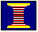

Solve For Select the variable to be calculate by pressing a RADIO BUTTON.
Solve For Select the variable to be calculate by pressing a RADIO BUTTON. 
Wire Table ProgramAssociated Application
General Considerations
The wire table (Table.exe) computes (a) the length of wire necessary to achieve a specific resistance based on a specific wire alloy and gauge (diameter), or (b) the resistance of a specific wire. All calculations are based on a wire temperature of 68 deg F (20 deg C).
All the circuit refinement calculations yield the ohmic values for one or more resistors needed to achieve the desired compensating or setting. The resistive components for physically producing these values can be either bonded foil types, discrete "component" resistors (metal film), or wire resistors made by spooling a small length of insulated, single-conductor wire. Bonded foil gages are generally preferred because they are similar in construction to strain gages and, therefore, perform similarly to strain gages when the transducer undergoes a change in temperature. (They exhibit similar "thermal tracking" characteristics.) However, in less demanding applications, or when the lowest component cost is important, the necessary resistance can be achieved with specific lengths of wire of various alloys and gauges (diameters). The wire table computes the lengths of these wires.
Inputs
Solve For Select the variable to be calculate by pressing a RADIO BUTTON.
 Resistance/Length Enter the appropriate values of length or resistance in the EDIT FIELD.
Resistance/Length Enter the appropriate values of length or resistance in the EDIT FIELD.
Wire Type Choose a wire alloy from the DROP-DOWN LIST BOX.
Wire Size Select a wire size from the LIST BOX.
Calculations
Resistance/Length Press the COMPUTE BUTTON to calculate the corresponding resistance or length.
Please note: The calculated length does not include the portion of wire included in the solder joint at either end. This portion should be added to the calculated length of wire.